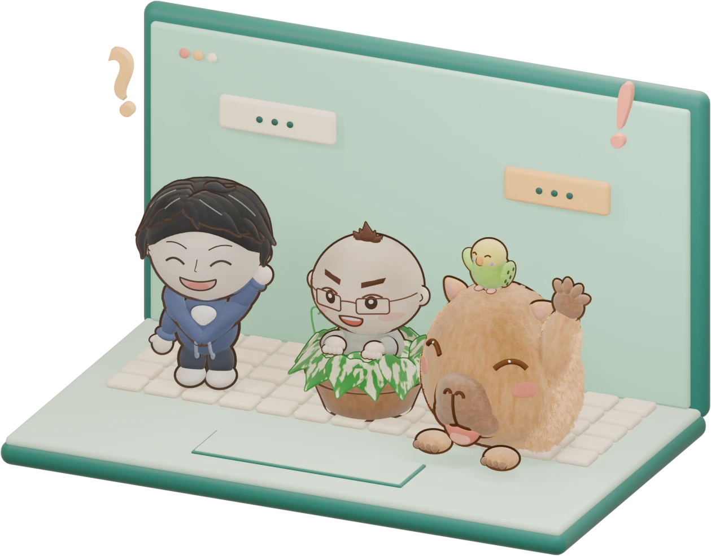

朝ごはんのおともに、AIの話を。
朝のAI勉強会では、みずのさんが最近のニュースや使い方を初心者向けに紹介しています。朝が忙しい人は、あとで気になる話題だけ。アーカイブのカードを押すと、その場面から見られます。
朝の会をアーカイブでのぞく ↗リベシティ会員のためのAIコミュニティ
「AIを開いてみたけど、最初に何て打てばいいの？」
そんな質問を、そのまま書ける場所です。
まだ質問が浮かばない日は、みんなの話を聞くだけでも。

もちろん、どうぞ。チャットの使いかた
チャットで生まれた話
ある朝の作例は、AIと話すほど画面に雪が積もる仕掛け。それを見た人が、自分でもまねして作ったとチャットで教えてくれました。
その投稿から着想をもらって、おけもんとAIが作ったのがこの絵本です。小さなラジオマイクも探してみてください。
はい。「何から始めればいいかわからない」という人のためのチャットです。朝の会を聞いたり、みんなの投稿を読んだりするところからどうぞ。
質問には全員宛ての通知「@ALL」を付けず、そのまま投稿してください。「何をしたかったか」と「どこで止まったか」が分かると、読んだ人も一緒に考えやすくなります。
リベシティ会員向けのチャットです。このページの「チャットをのぞいてみる」からルームを開けます。ログイン画面が出たら、リベシティのアカウントでログインしてください。
「世界一優しいAIチャット」を目指して、
リベシティでお待ちしています。